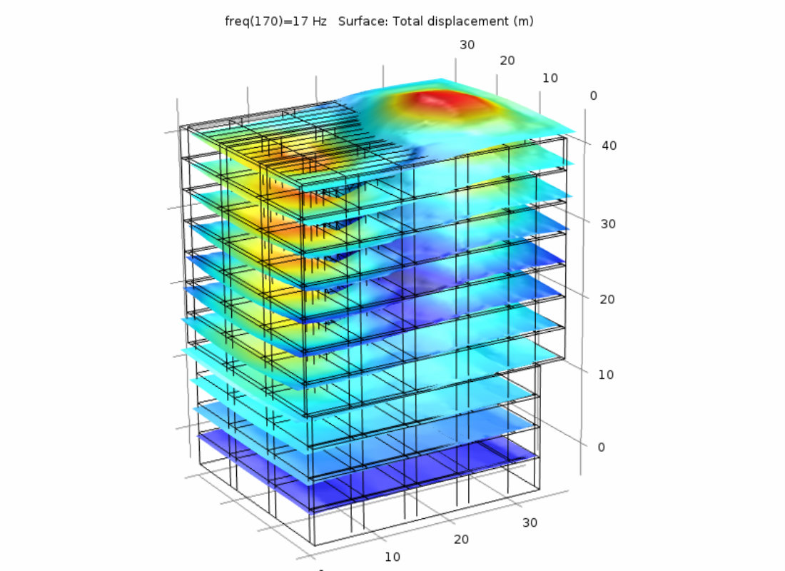
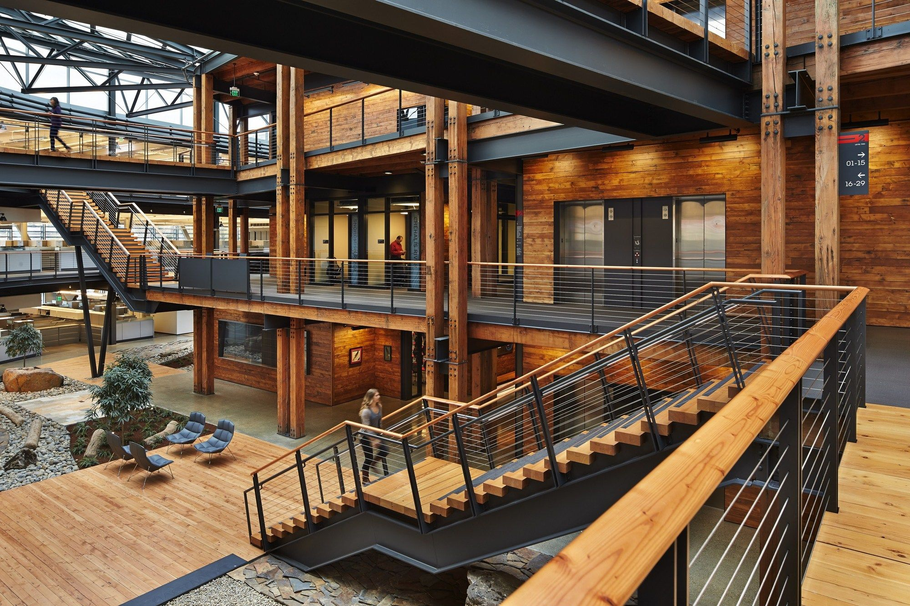
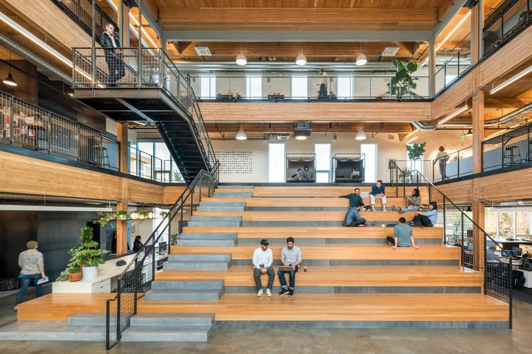

Design of reinforced concrete structures
Design of reinforced concrete structures is an introductory design course in civil engineering. In this course, basic elements governed by bending, shear, axial forces or combination of them are identified and are considered as building blocks of the whole structure.

Dynamics of constructions
Design of reinforced concrete structures is an introductory design course in civil engineering. In this course, basic elements governed by bending, shear.

Iron constructions 1
Overall employment of ironworkers is projected to grow 6 percent from 2020 to 2030, about as fast as the average for all occupations. About 10,100 openings for ironworkers are projected each year, on average, over the decade

Iron constructions 2
Overall employment of ironworkers is projected to grow 6 percent from 2020 to 2030, about as fast as the average for all occupations. About 10,100 openings for ironworkers are projected each year, on average, over the decade

Engineering
Engineering is the use of scientific principles to design and build machines, structures, and other items, including bridges, tunnels, roads, vehicles, and buildings.[1] The discipline of engineering encompasses a broad range of more specialized fields of engineering, each with a more specific emphasis on particular areas of applied mathematics, applied science, and types of application.